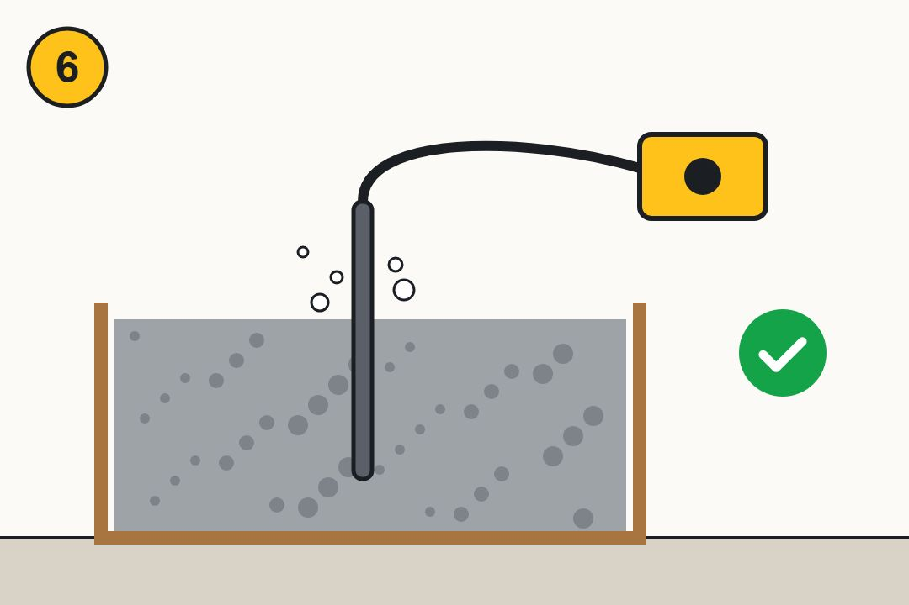
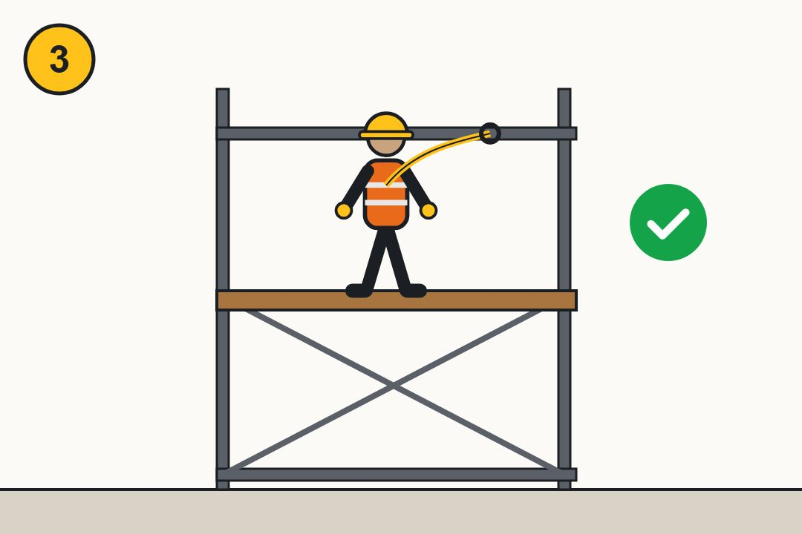

SITE SAATHI · Day 13 test kit
Rules: testers are workers or classmates who agree. Write them as T1–T5, no names or phone numbers. Do not help unless they are stuck for more than 1 minute; if you help, mark "help". Write what they say and do, not what you think. If a task was not done, write "not tested".
Consent script (read aloud): "This is a free learning app I am building for construction workers. I want to see if it is easy to use. I am testing the app, not you. I will not write your name. You can stop any time. Is that OK?"
| Tester | Worker / classmate | Trade | Language used | Own smartphone? | Agreed |
|---|---|---|---|---|---|
| T1 | |||||
| T2 | |||||
| T3 | |||||
| T4 | |||||
| T5 |
A · Functional test (one sheet per phone)
| Phone (brand / model) | |
| Android version · free storage | |
| APK installed from (Drive / USB) · OK? |
| # | Check | Pass | Fail | What happened (if fail) |
|---|---|---|---|---|
| F1 | App opens: splash, then Language (first time) or Home | |||
| F2 | Chosen language is saved and used on every screen | |||
| F3 | Start learning → module → lesson opens with pictures and steps | |||
| F4 | Audio plays for the lesson in the chosen language | |||
| F5 | Each printed QR opens the right lesson; SS-TEST-99 shows the clear message | |||
| F6 | Quiz: 5 questions, right / wrong shown, score = manual count | |||
| F7 | My Skills shows completed lessons and best scores | |||
| F8 | Settings: language and text size change; reset asks first |
B · Offline test (airplane mode)
| # | Step | OK | Problem | Note |
|---|---|---|---|---|
| O1 | Turn on airplane mode | |||
| O2 | Open the app (from closed) | |||
| O3 | Open each of the 3 lessons and go through every step | |||
| O4 | Play the audio of a lesson | |||
| O5 | Do a full quiz and see the result | |||
| O6 | Scan each QR poster and type one code | |||
| O7 | Close and reopen the app: My Skills still shows the score |
F1–F8 and O1–O7 are derived from PRD §06 and §11.6 because the original BRD lists are not in Doc/. Use the BRD wording if it is different.
C · Usability (one sheet per tester) · Tester T__
Give the phone on the Home screen (or first open). Say only the task.
| # | Task | No help | Hesitated | Needed help | Time (s) | What they said / did |
|---|---|---|---|---|---|---|
| U1 | Choose your language | |||||
| U2 | Find the brick masonry lesson | |||||
| U3 | What does this picture show? (3 pictures) | |||||
| U4 | Finish a quiz and tell me your score |
U3 · Show these 3 pictures in the app (or printed) and ask "What does this show?"
| Picture | Meant to show | What the tester said | Understood |
|---|---|---|---|
 SS-MAS-01_s5.jpg | joints staggered, frog up; joints in one line crack | ||
 SS-CON-01_s6.jpg | vibrate until air bubbles stop | ||
 SS-SAF-01_s3.jpg | harness tied to a strong point on scaffolding |
Words the tester did not understand
| Word / sentence | Screen / lesson | Language | Word they would use |
|---|---|---|---|
Anything else they said
D · Issue log (all phones and testers)
| # | What went wrong | Screen | Seen by (phone / tester) | How often | Severity H / M / L |
|---|---|---|---|---|---|
High = blocks the core journey (open → language → lesson → quiz) or is unsafe/wrong content. Medium = confusing, needs help. Low = looks / wording.